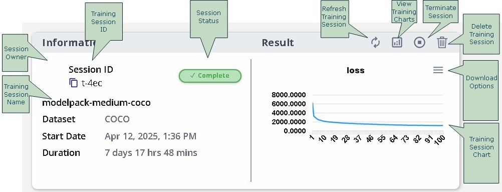
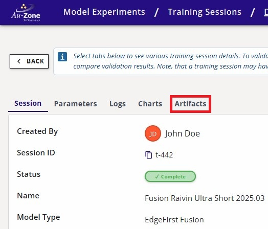
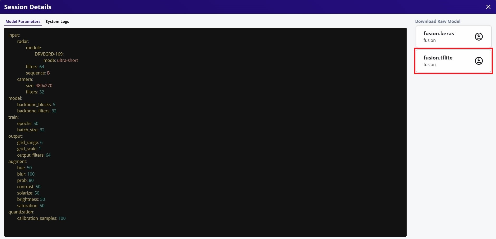
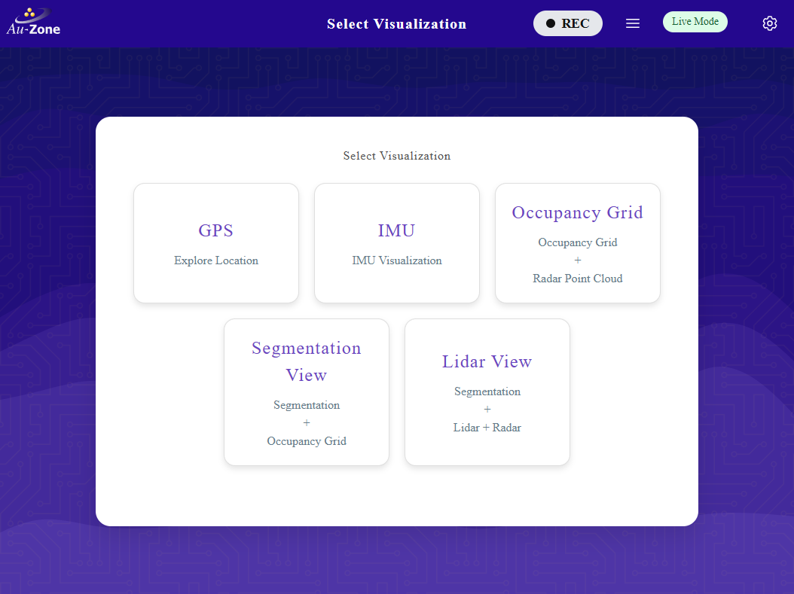
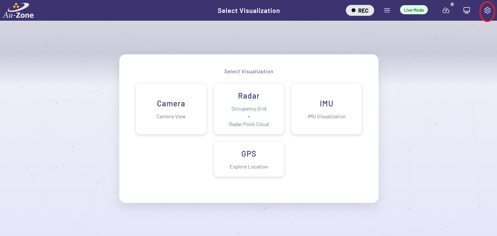
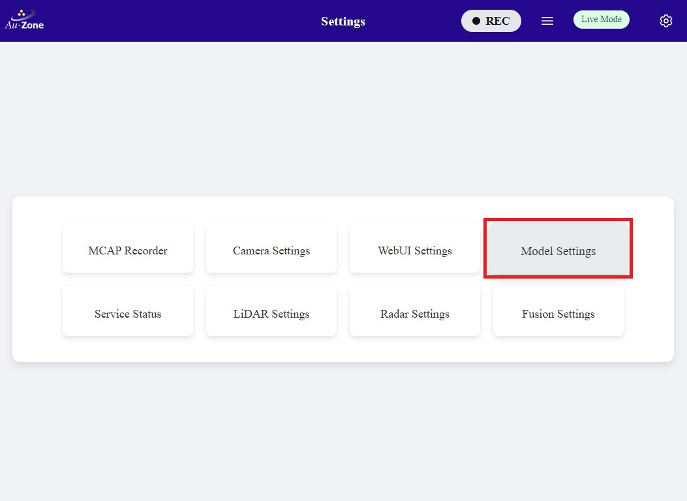
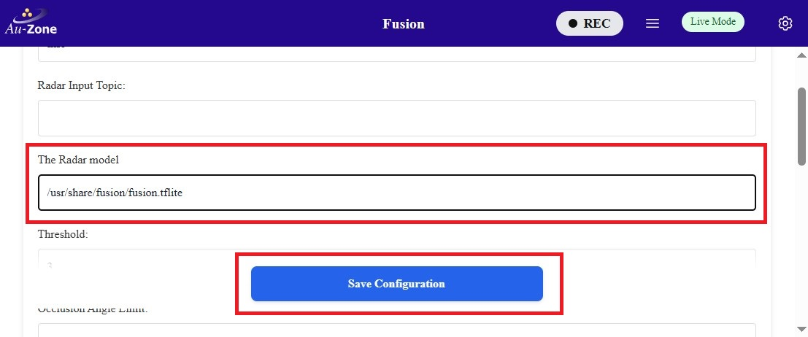
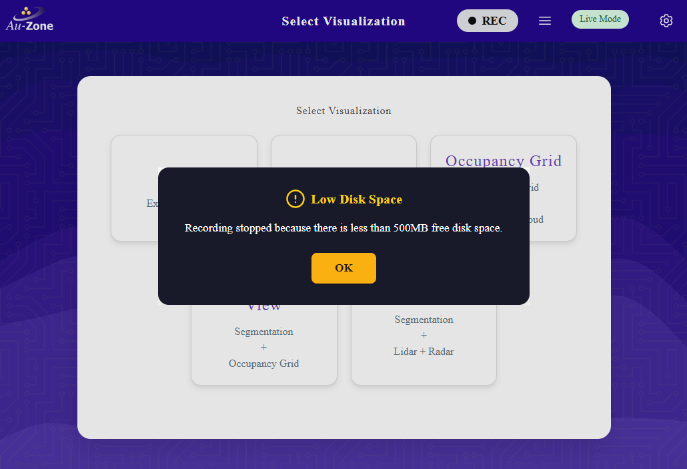
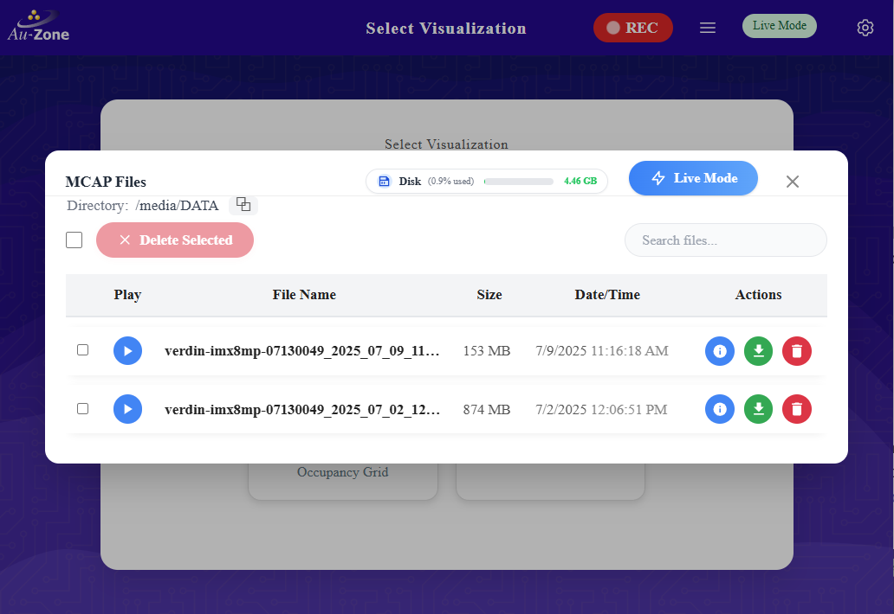

Deploying to the Raivin
Now that you have validated your Fusion model, this guide will walk you through deploying Fusion models in a Raivin Platform.
This guide will showcase two methods of deploying the model.
Download the Model
First download the model from EdgeFirst Studio into the Raivin Platform. There are two methods for downloading the model. The first method is to download the model from EdgeFirst Studio and then SCP the model file to the Raivin Platform. The second method is to use the EdgeFirst Client to download the model directly in the device.
Download and SCP
As mentioned under the Trained Models section, the trained models can be downloaded by clicking the "View Additional Details" button on the training session card in EdgeFirst Studio.

This will open the session details and the models are listed under the "Artifacts" tab as shown below. Click on the downward arrow indicated in red to download the models to your PC. In this example, we will be deploying the TFLite model in the Raivin.
| Session Details | Artifacts |
|---|---|
 |
 |
Once the model is downloaded in your PC, you can SCP the model to the Raivin by using this command template.
scp <path to the downloaded TFLite model> <destination path>
An example command is shown below.
scp fusion.tflite torizon@verdin-imx8mp-07130049:~
Download using the Client
This method expects you to have already connected to the Raivin via SSH. The EdgeFirst Client can be installed via pip3 install edgefirst-client. You can verify the installation with the client version command.
$ edgefirst-client version
EdgeFirst Studio Server: 3.7.8-a50429e Client: 1.3.3
Next login to the client with the command.
$ edgefirst-client login
Username: user
Password: ****
You will now be able to download the model on the device by the download-artifact command.
edgefirst-client download-artifact <session ID> <model name>
The download-artifact expects three arguments.
- session ID: Pass the integer trainer or validation session ID associated with the models.
- model name: Pass the specific model that will be downloaded to the device. Usually this is
fusion.tflite. - download path (optional): Specify the path to download the model. If not provided, it will download to the current working directory.
You can find more information on using the EdgeFirst Client in the command line.
Visit the Web UI Service
Visit the Web UI service by entering the URL https://<hostname>/ in your browser.
Note
Replace <hostname> with the hostname of your device.
You will be greeted with the Raivin WebUI Main Page page.

For more information, please see the Web UI Walkthrough.
Update the Model Path
Next you will need to specify the path to the model in the device. You can either update the model path in the Web UI or via the command line.
Configure Model Settings
Whenever a new model has been updated, ensure that the model settings such as the score and the IoU thresholds are ideally set for this model.
Web UI
Once you are in the Web UI main page, you can specify the path to the model by following the steps below.
Click the settings icon on the top right corner of the page.

Select "Model Settings".

Configure the path to the model in your device as specified under "MODEL:". Once configured, click "Save Configuration" to save your changes.

Command Line
To update the model path using the command line in the device, edit the following file using sudo vi /etc/default/model.
Next, you will see the file with the following contents.
# This is the configuration file for the model systemd service file. When
# running systemctl start detect the service will use these configurations.
# If running model directly, you must continue to use the command-line options.
# A model is required for the model application. This can be a segmentation model
# and/or a detection model.
MODEL = "path/to/mymodel.tflite"
Edit the following line MODEL = "path/to/mymodel.tflite" to point to the specific path to your model. To edit, press i to enter into "Insert Mode". You should now be able to edit the lines. To exit "Insert Mode", press the ESC key on your keyboard. Next save and exit the file by typing :wq on your keyboard. More examples for using vi can be found here.
Once the path to the model has been updated, restart the model service using sudo systemctl restart model.
Enable and Start the Camera and Model Services
Once the model path in the device is specified, ensure that all services are enabled. To verify, go back to the settings and click on the "Service Status" button.

You will be greeted with the "Service Overview" page. Ensure that all services are enabled and running by toggling the "Enable" and "Start" buttons as shown. Only "Enable" the "recorder" service as shown. You will be using the recorder service in MCAP Recording.

Live View (Segmentation App)
Now you will see a live inference of the model in the device. Once all services are enabled, go back to the main page and then select the "Segmentation View" application as shown.

This will run inference on the model specified to generate segmentation masks of identified objects on the camera feed and highlights the radar point clouds on the occupancy grid marking the positions of the objects in world coordinates. Examples are shown below.


Now that the model has been updated, you can make new recordings using the model's inference and then visualizing the recording using Foxglove Studio.
Record MCAP
MCAP recordings can be started and stopped using the Recording Button at the device's top navbar. It is to the left of the MCAP Details hamburger button, which is used to open the MCAP Details Modal.

Both of these buttons are available on every page of the Maivin, Raivin, and other edge devices running the EdgeFirst middleware.
Note
You must close all modals to be able to click the "Recording" and "Details" Buttons.
For more information about recording MCAPs, please read the MCAP Recording section.
Start Recording
To start a recording, simply click the "Recording" button to begin capturing data.
Note
It may take up to 30 seconds for a recording to start, depending on topic tracked.
Low Disk Space
If there is not enough room on the drive to record an MCAP, recording will automatically stop and you will get a "Low Disk Space" error.

If you were to open the MCAP Details Modal while recording, you would see a new MCAP file in the MCAP list.

Stop Recording
To stop recording, click the "Recording" button a second time.
Download MCAP
To download an MCAP recording from the device, click the MCAP Details hamburger button to open the MCAP Details Modal.

Use the "Download" button  in the row containing the name of the MCAP file you want to download, which will download the MCAP file to your local machine.
in the row containing the name of the MCAP file you want to download, which will download the MCAP file to your local machine.
You can also use an SSH client to copy files off the Raivin.
Inference Visualization in Foxglove
Once the MCAP recording has been downloaded, you can use Foxglove Studio to see the playback of MCAP recordings and the model inference. The following preview shows the segmentation mask from the model identifying the person in the frame (right) and the occupancy grid highlighting the radar clusters that correspond to the person's position in world coordinates.

More information on the MCAP playback is provided in Foxglove Studio. Modifying panels and customizing various settings are also shown in Advanced Foxglove.
In this tutorial, you have fetched the trained and validated model from EdgeFirst Studio, copied the model in the Raivin, configured the Raivin model services, and ran inference on the model in the device. You have seen the model running live using the Raivin's camera and Radar module, and ran a Raivin MCAP recording to capture the model inferences in the frame that can be visualized using Foxglove Studio.